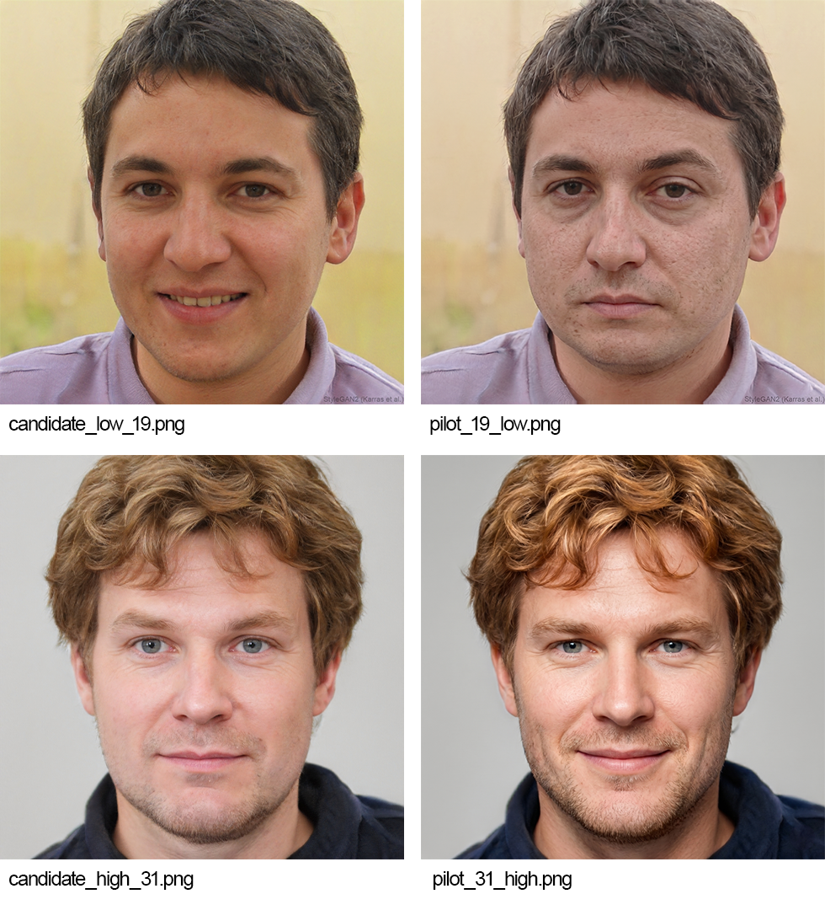
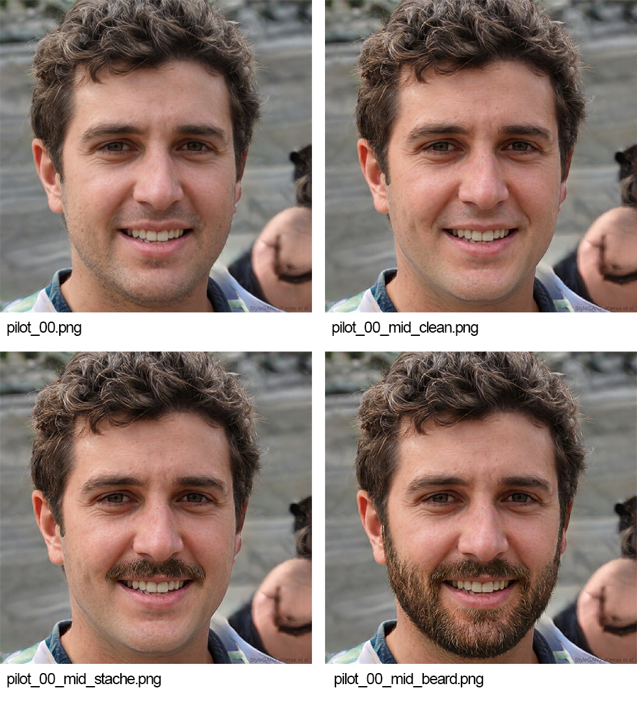
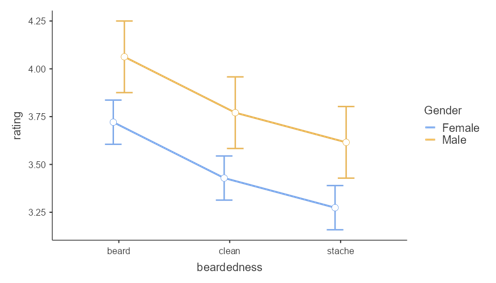

Holit či neholit? Vliv vousů na vnímanou atraktivitu mužských tváří
Úvod
Vousy představují jeden z nejvýraznějších sekundárních pohlavních znaků mužské tváře a dlouhodobě jsou předmětem zájmu evoluční psychologie a výzkumu percepce obličejů[cite: 3]. Muži s vousy jsou ženami vnímáni jako starší, s vyšším sociálním statusem a lepšími rodičovskými dovednostmi (Dixson & Brooks, 2013), zároveň je však ochlupení mužské tváře spojováno s vyšší mírou agrese a dominance (Dixson & Vasey, 2012). Právě tato ambivalence – kdy vousy signalizují jak žádoucí, tak potenciálně méně žádoucí vlastnost – může přispívat k odlišným výsledkům týkajícím se jejich vlivu na atraktivitu napříč studiemi i jednotlivými hodnotiteli (Janif et al., 2014).
Dosavadní výzkum se přitom soustředil zejména na lineární manipulaci hustoty strniště (Dixson & Brooks, 2013), tedy na kontinuum od hladce oholeného obličeje po plnovous, zatímco menší pozornost byla věnována odlišným stylům vousů[cite: 3]. Novější studie proto upozorňují na potřebu zkoumat také specifické styly, například samostatný knír (Gray et al., 2020).
Další nekonzistence v literatuře se týká role výchozí atraktivity tváře[cite: 3]. Vousy mohou částečně zakrývat některé rysy obličeje, a potenciálně tak měnit jejich celkové vnímání[cite: 3]. Některé studie naznačují, že mohou působit jako kompenzační mechanismus u méně atraktivních tváří, tedy jako určitý „upgrade“, zatímco u vysoce atraktivních tváří může být jejich přínos menší nebo dokonce negativní (Dixson et al., 2016). Otázkou rovněž zůstává, zda se vnímání vlivu vousů na atraktivitu liší mezi mužskými a ženskými hodnotiteli[cite: 3]. Zatímco některé studie zaměřené na sociální atributy, jako je status nebo dominance, rozdíly mezi pohlavími hodnotitelů nacházejí, jiné práce zaměřené přímo na preference týkající se mužského ochlupení významné rozdíly neprokazují (Jach & Moroń, 2020). Tato nejednotnost může souviset s tím, že jednotlivé studie sledují odlišné charakteristiky mužské tváře a jejího vnímání[cite: 3].
Dalším omezením dosavadního výzkumu je kontrola vizuálních stimulů[cite: 3]. Studie využívající neupravené fotografie reálných osob mohou být ovlivněny proměnnými, které nelze mezi jednotlivými podmínkami zcela standardizovat, například výrazem tváře nebo podmínkami fotografování (Dixson & Brooks, 2013). Naopak tradiční digitální manipulace fotografií (např. manuální kompozity) může vést k vizuálním artefaktům a snížení realismu stimulů (Nightingale & Farid, 2022).
Cílem naší studie bylo tyto mezery adresovat pomocí metodologicky robustnějšího přístupu[cite: 3]. Použili jsme vysoce realistické stimuly generované pomocí umělé inteligence, které byly kalibrovány v nezávislé pilotní studii, a kromě plnovousu jsme zahrnuli také knír jako samostatnou experimentální podmínku[cite: 3]. Zaměřili jsme se na tři otázky: (1) zda typ vousů (hladce oholeno, plnovous, knír) ovlivňuje vnímanou atraktivitu mužské tváře, (2) zda se tento efekt liší v závislosti na pohlaví hodnotitele a (3) zda jeho velikost závisí na výchozí atraktivitě hodnocené tváře[cite: 3]. Na základě předchozího výzkumu jsme předpokládali, že typ vousů ovlivní hodnocení atraktivity (H1), že velikost tohoto efektu se bude lišit mezi mužskými a ženskými hodnotiteli (H2) a že efekt vousů bude záviset na výchozí atraktivitě tváře (H3), přičemž jsme očekávali výraznější pozitivní efekt vousů u méně atraktivních tváří[cite: 3].
Metodologie
Pro výzkum byl zvolen smíšený experimentální design, ve kterém participanti hodnotili atraktivitu hyperrealistických fotografií mužských tváří na 7-bodové Likertově škále (1 = nejnižší atraktivita, 7 = nejvyšší atraktivita)[cite: 3]. Stimuly byly vygenerovány pomocí generativního modelu StyleGAN2 (Karras et al., 2020). Využití syntetických stimulů namísto standardizovaných databází (např. Chicago Face Database; Ma et al., 2015) bylo motivováno potřebou plné experimentální kontroly a nutností systematicky modifikovat tvářové ochlupení při zachování konstantních obličejových rysů[cite: 3].

Nejprve byla provedena pilotní studie ($N = 58$) za účelem validace a selekce kandidátních stimulů[cite: 3]. Participanti v pilotáži hodnotili 75 stimulů mužských tváří se ženskými distraktory[cite: 3]. Pro zajištění dostatečného rozpětí atraktivity byl výchozí soubor obohacen o extrémní varianty vytvořené pomocí latentních difúzních modelů (Rombach et al., 2022) konkrétně Nano Banana Pro (Google DeepMind, 2025) a softwaru Adobe Photoshop (Adobe Inc., 2026). Provedené úpravy směřovaly buď k maximalizaci obličejové harmonie (beautification), nebo k vytvoření strukturální asymetrie (uglification; viz Obrázek 1; přesná znění promptů jsou uvedena v Příloze)[cite: 3]. Stimuly byly prezentovány po dobu 1000 ms (Willis & Todorov, 2006) s předcházejícím fixačním křížem s variabilním trváním 500–800 ms (jittering) pro zamezení časové anticipace (Niemi & Näätänen, 1981).
Selekce stimulů a index RCI
Selekce stimulů do finálního experimentu probíhala na základě dat z pilotní studie prostřednictvím autorského indexu reprezentativnosti a konzistentnosti (Representativeness Consistency Index, RCI)[cite: 3]. Škála hodnocení byla rozčleňená do tří cílových kohort: low (1–3), mid (3–5) a high (5–7)[cite: 3]. Pro experimentální vzorek byl vzorec RCI definován jako:
kde $\bar{x}$ je průměrné hodnocení stimulu v pilotáži, $SD$ je jeho směrodatná odchylka a $T$ představuje středový cíl dané kohorty ($T_{\text{low}} = 2.0$; $T_{\text{mid}} = 4.0$; $T_{\text{high}} = 6.0$)[cite: 3]. Vyšší skóre RCI indikuje vysokou reprezentativnost pro danou kohortu při současně nízké variabilitě hodnocení[cite: 3].
Pro kalibrační vzorek byl použit alternativní vzorec s cílovými hodnotami posunutými k extrémům škály ($T_{\text{low}} = 1.0$; $T_{\text{mid}} = 4.0$; $T_{\text{high}} = 7.0$) s cílem ukotvit referenční rámec hodnocení (tzv. anchoring; Parducci, 1965)[cite: 3]. Na základě RCI bylo nejprve vybráno 6 kalibračních stimulů v rovnoměrném zastoupení (2 stimuly pro každou ze tří kategorií; poměr 1:1:1)[cite: 3]. Tento kompromisní rozsah byl zvolen tak, aby zajistil spolehlivé ukotvení obou extrémů škály, a zároveň minimalizoval únavu participantů, která by při větším počtu kalibračních trialů v kombinaci s již tak rozsáhlým podnětovým materiálem mohla negativně ovlivnit pozornost[cite: 3]. Následně bylo vybráno 21 experimentálních identit (7 v každé kohortě)[cite: 3]. Ze zbývajících stimulů bylo vybráno celkem 21 distraktorů, čímž byl stanoven požadovaný celkový poměr 1:4 vůči experimentálním stimulům[cite: 3]. Jejich rozložení v poměru 5:11:5 bylo zvoleno tak, aby se na rozdíl od uniformního rozložení (1:1:1) více přibližovalo normálnímu rozdělení atraktivity v populaci, a tím zvyšovalo ekologickou validitu podnětového materiálu (Brunswik, 1955).

Vybraných 21 experimentálních identit bylo následně upraveno do tří variant tvářového ochlupení (oholený – clean, knír – stache, plnovous – beard; viz Obrázek 2; prompty v Příloze)[cite: 3]. Vizuální konstantnost byla zajištěna tak, že základ tvořil čistý raster oholené tváře a varianty vousů byly aplikovány jako maskované vrstvy v Adobe Photoshop; pixely mimo definované oblasti ochlupení tak zůstaly zachovány bez změn[cite: 3]. Celkový podnětový materiál tvořilo 84 trialů (63 experimentálních stimulů + 21 distraktorů)[cite: 3].
Procedura a kontrola zkreslení
Časové parametry prezentace stimulů byly ve finálním experimentu zachovány v identické podobě jako v pilotní studii: každý trial začínal fixačním křížem s variabilním trváním 500–800 ms (jittering) pro zamezení časové anticipace (Niemi & Näätänen, 1981), po čemž následovala expozice stimulu po dobu 1000 ms (Willis & Todorov, 2006). Prezentace 84 trialů probíhala v pseudorandomizovaném pořadí rozděleném do 21 uniformních bloků po čtyřech trialech (1 distraktor a 3 experimentální stimuly)[cite: 3]. Algoritmus vynucoval odstup minimálně 10 trialů mezi opětovným zobrazením stejné identity, čehož cílem bylo minimalizovat riziko přímého porovnávání a vizuálního primingu (Greenwald, 1976).
Vzorek a vylučovací kritéria
Z původního počtu 283 participantů bylo z analýzy vyřazeno 65 osob[cite: 3]. Důvody vyloučení tvořily: účast v pilotní studii ($n = 19$; zamezení efektům opakovaného testování; Shadish et al., 2002), věk pod 18 let ($n = 42$), jiná než česká nebo slovenská národnost ($n = 3$) a neuvedení binárního pohlaví ($n = 1$; extrémně nízké zastoupení pro srovnání v modelu)[cite: 3]. Finální vzorek tvořilo $N = 218$ participantů (158 žen, 60 mužů; $M_{\text{Age}} = 30.86$, $SD = 13.14$)[cite: 3].
Statistická analýza
Data byla analyzována pomocí lineárního smíšeného modelu (LMM) v prostředí Jamovi (balíček GAMLJ; Gallucci, 2019)[cite: 3]. Model byl specifikován následovně:
Kategorický faktor typu vousů (beardedness; referenční úroveň: clean) a pohlaví (Gender) tvořily fixní efekty[cite: 3]. Kovariáty hodnocení atraktivity (Attractiveness; výchozí atraktivita z-scored), věk (Age) a pořadí (Order) byly centrovány na průměr[cite: 3]. Náhodná struktura zahrnovala náhodný intercept pro participanty[cite: 3]. Parametry byly odhadnuty metodou REML s aproximací stupňů volnosti podle Satterthwaitea[cite: 3].
Výsledky
Do analýzy bylo zahrnuto 218 participantů (158 žen a 60 mužů), kteří poskytli celkem 11 063 jednotlivých hodnocení[cite: 3]. Hodnocení atraktivity byla analyzována pomocí lineárního smíšeného modelu, který zohledňoval variabilitu mezi participanty a jednotlivými stimuly[cite: 3]. Model vysvětloval 55 % celkové variability v hodnocení atraktivity (kondicionální $R^2 = .55$; $\text{ICC} = .31$), přičemž fixní efekty vysvětlovaly 35 % variability (marginální $R^2 = .35$; viz Tabulka 1)[cite: 3].
| Effect | Estimate | SE | 95% CI | df | t | p | |
|---|---|---|---|---|---|---|---|
| Lower | Upper | ||||||
| (Intercept) | 3.65 | 0.05 | 3.54 | 3.76 | 218.19 | 66.34 | <.001 |
| Male - Female | 0.34 | 0.11 | 0.11 | 0.56 | 218.40 | 3.11 | 0.002 |
| Order | 0.00 | 0.00 | 0.00 | 0.00 | 11001.41 | -3.27 | 0.001 |
| Age | 0.01 | 0.00 | 0.00 | 0.01 | 211.04 | 2.07 | 0.040 |
| clean - beard | -0.29 | 0.02 | -0.34 | -0.25 | 10862.77 | -12.11 | <.001 |
| stache - beard | -0.45 | 0.02 | -0.49 | -0.40 | 10849.85 | -18.52 | <.001 |
| stim_id_mean_rating | 1.00 | 0.01 | 0.98 | 1.03 | 10854.56 | 87.97 | <.001 |
| (clean - beard) ✻ stim_id_mean_rating | 0.02 | 0.03 | -0.03 | 0.07 | 10858.39 | 0.70 | 0.486 |
| (stache - beard) ✻ stim_id_mean_rating | -0.05 | 0.03 | -0.10 | 0.00 | 10852.91 | -1.75 | 0.080 |
Deskriptivní statistiky na úrovni všech hodnocení ukázaly, že nejvyšší průměrné hodnocení atraktivity získaly tváře s plnovousem ($M = 3.77$, $SD = 1.53$), následované hladce oholenými tvářemi ($M = 3.49$, $SD = 1.51$) a tvářemi s knírem ($M = 3.33$, $SD = 1.53$)[cite: 3]. Typ vousů měl statisticky významný vliv na hodnocení atraktivity, $F(2, 10856.68) = 132.40$, $p < .001$[cite: 3]. Následná párová srovnání s Tukeyho korekcí (viz Tabulka 2) ukázala, že se všechny tři podmínky od sebe statisticky významně lišily[cite: 3]. Tváře s plnovousem byly hodnoceny jako atraktivnější než hladce oholené tváře ($\text{rozdíl} = 0.29$, $SE = 0.03$, $t(10863.62) = 10.50$, $p < .001$) i než tváře s knírem ($\text{rozdíl} = 0.45$, $SE = 0.03$, $t(10851.82) = 16.01$, $p < .001$)[cite: 3]. Hladce oholené tváře byly zároveň hodnoceny jako atraktivnější než tváře s knírem ($\text{rozdíl} = 0.15$, $SE = 0.03$, $t(10854.50) = 5.53$, $p < .001$)[cite: 3]. Celkově tedy bylo pořadí průměrného hodnocení atraktivity plnovous > hladce oholená tvář > knír[cite: 3].
| Comparison | Difference | SE | t | df | ptukey | ||
|---|---|---|---|---|---|---|---|
| beardedness | vs | beardedness | |||||
| beard | - | clean | 0.29 | 0.02 | 12.11 | 10862.77 | <.001 |
| beard | - | stache | 0.45 | 0.02 | 18.52 | 10849.85 | <.001 |
| clean | - | stache | 0.16 | 0.02 | 6.43 | 10857.82 | <.001 |
Vedle typu vousů byl statisticky významným prediktorem hodnocení také průměrný rating výchozí atraktivity konkrétního stimulu, $F(1, 10852.56) = 7736.89$, $p < .001$[cite: 3]. Statisticky významné byly rovněž hlavní efekty pohlaví hodnotitele, $F(1, 218.40) = 9.67$, $p = .002$, pořadí prezentace stimulů, $F(1, 10999.52) = 10.69$, $p = .001$, a věku hodnotitele, $F(1, 211.04) = 4.29$, $p = .040$[cite: 3]. V případě pohlaví byl odhad hodnocení u mužů v průměru o 0.34 bodu vyšší než u žen, 95% CI [0.13, 0.56][cite: 3]. Tento rozdíl se však nepromítl do odlišného hodnocení jednotlivých typů vousů[cite: 3]. Interakce mezi pohlavím hodnotitele a typem vousů nebyla statisticky významná, $F(2, 10856.86) \approx 0$, $p = .995$[cite: 3]. Přestože tedy muži v průměru hodnotili tváře výše než ženy, vzorec hodnocení jednotlivých typů vousů byl u obou skupin obdobný (viz Obrázek 3)[cite: 3].

Dále byla zjištěna statisticky významná interakce mezi typem vousů a výchozí atraktivitou stimulu, $F(2, 10854.03) = 3.19$, $p = .041$[cite: 3]. Pro bližší posouzení této interakce byly analyzovány jednoduché efekty typu vousů při nízké ($-1\,SD$), průměrné a vysoké ($+1\,SD$) výchozí atraktivitě[cite: 3]. Při nízké výchozí atraktivitě byl plnovous hodnocen o 0.31 bodu výše než oholená varianta a o 0.40 bodu výše než varianta s knírem (obě $p < .001$)[cite: 3]. Při průměrné výchozí atraktivitě činily tyto rozdíly 0.29, respektive 0.45 bodu (obě $p < .001$), a při vysoké výchozí atraktivitě 0.28, respektive 0.49 bodu (obě $p < .001$)[cite: 3]. Rozdíl mezi plnovousem a oholenou tváří se mezi nízkou a vysokou výchozí atraktivitou statisticky významně neměnil ($p = .486$)[cite: 3]. Interakce byla tedy spojena především se změnou rozdílu mezi variantou s knírem a oholenou tváří, přičemž tento rozdíl se u vysoce atraktivních stimulů mírně prohluboval – z 0.09 bodu při $-1\,SD$ na 0.21 bodu při $+1\,SD$ výchozí atraktivity[cite: 3].
Diskuse
Cílem studie bylo prozkoumat vliv různých typů mužského tvářového ochlupení na vnímanou atraktivitu, se zaměřením na rozdíly mezi pohlavími hodnotitelů a roli výchozí (hodnocené) atraktivity tváře[cite: 3]. Naše výsledky poskytují důkazy, že typ vousů statisticky významně ovlivňuje estetické vnímání mužské tváře (H1) a že se tento efekt do jisté míry liší podle výchozí atraktivity (H3)[cite: 3]. Co se týče rozdílů mezi hodnotiteli (H2), v datech se objevuje rozdíl v průměrné úrovni hodnocení mezi muži a ženami; vysvětlení takových rozdílů (např. odlišné kritérium hodnocení z pozice výběru partnera vs. širší sociální preference) je však pouze spekulativní, protože náš design a sběr dat tyto mechanismy přímo nezkoumají[cite: 3].
Pozorována byla jasná hierarchie preferencí: tváře s plnovousem byly hodnoceny jako nejatraktivnější, následovaly oholené tváře, zatímco tváře s knírem byly hodnoceny jako nejméně atraktivní[cite: 3]. Párová srovnání s Tukeyho korekcí potvrdila statistickou významnost všech rozdílů ($p_{\text{tukey}} < .001$): plnovous překonával oholené tváře o +0,29 bodu a knír o +0,45 bodu, zatímco oholené tváře byly hodnoceny o +0,15 bodu výše než knír[cite: 3]. Z hlediska věcné významnosti představuje celkový efekt vousů modifikaci v rozsahu necelého půl bodu na 7-bodové škále, což ukazuje na sekundární, avšak konzistentní vliv stylizace tváře v porovnání s dominantní rolí obličejové morfologie[cite: 3]. Tento výsledek rozšiřuje dosavadní poznatky o pozitivním vlivu vousů na atraktivitu a potvrzuje, že specifické styly ochlupení nelze redukovat pouze na lineární kontinuum množství vousů (Gray et al., 2020). Penalizace kníru může odrážet současné sociokulturní normy v českém a slovenském kontextu, kde se samostatný knír vymyká aktuálním estetickým ideálům, případně může vizuálně narušovat plynulost obličejových proporcí[cite: 3]. Tyto výsledky je však nutné interpretovat v kontextu demografického složení našeho vzorku[cite: 3]. Sběr dat probíhal metodou příležitostného výběru (convenience sampling) primárně prostřednictvím sociální sítě Instagram[cite: 3]. Tento postup vedl ke specifickému demografickému rozložení, v němž dominovali mladší participanti, výrazně převažovaly ženy a lze předpokládat i vyšší zastoupení obyvatel z větších měst[cite: 3]. Naše zjištění proto odrážejí primárně preference této specifické demografické skupiny a nelze je bezvýhradně generalizovat na celou populaci[cite: 3].
Naše data ukazují, že muži udělovali v průměru mírně vyšší skóre atraktivity než ženy (+0,34 bodu; $p = .002$), přičemž interakce pohlaví $\times$ typ vousů nebyla významná, $F(2, 10856.86) \approx 0$, $p = .995$[cite: 3]. Tento vzorec znamená, že ačkoli se liší průměrná úroveň hodnocení, muži i ženy sdílejí obdobné preference týkající se pořadí typů vousů (plnovous > oholené > knír)[cite: 3]. Jakékoli vysvětlení rozdílu v průměrné úrovni — například rozdílné motivace nebo kontexty posuzování — je hypotetické a vyžadovalo by samostatné studie zaměřené na motivační nebo kontextuální faktory[cite: 3]. Tento výsledek koresponduje se závěry Jacha a Moroňa (2020), kteří naznačili, že preference ohledně mužského ochlupení jsou mezi oběma pohlavími vysoce kongruentní, pokud je měřeným konstruktem fyzická atraktivita, nikoliv evolučně zacílené sociální atributy jako dominance nebo rodičovský potenciál.
Dále byla zjištěna statisticky významná interakce mezi typem vousů a výchozí atraktivitou stimulu, $F(2, 10854.03) = 3.19$, $p = .041$[cite: 3]. Pro bližší posouzení této interakce byly analyzovány jednoduché efekty při nízké ($-1\,SD$), průměrné a vysoké ($+1\,SD$) výchozí atraktivitě[cite: 3]. Při nízké výchozí atraktivitě byl plnovous hodnocen o 0.31 bodu výše než oholená varianta a o 0.40 bodu výše než varianta s knírem (obě $p < .001$)[cite: 3]. Při průměrné výchozí atraktivitě činily tyto rozdíly 0.29, respektive 0.45 bodu (obě $p < .001$), a při vysoké výchozí atraktivitě 0.28, respektive 0.49 bodu (obě $p < .001$)[cite: 3]. Rozdíl mezi plnovousem a oholenou tváří se mezi nízkou a vysokou výchozí atraktivitou statisticky významně nelišil ($p = .486$)[cite: 3]. Analýza ukazuje, že hlavním zdrojem interakce je nikoli změna „upgradovací“ síly plnovousu, ale spíše to, že negativní efekt kníru roste u atraktivnějších tváří (rozdíl mezi knírem a oholenou verzí se zvětšil z 0.09 bodu u $-1\,SD$ na 0.21 bodu u $+1\,SD$)[cite: 3]. Interakci lze tedy popsat tak, že plnovous poskytuje relativně stabilní vizuální přínos napříč úrovněmi výchozí atraktivity, zatímco samostatný knír má relativně větší penalizaci u vysoce hodnocených tváří[cite: 3].
Ačkoli studie využívá kombinaci generativních metod a ručního maskování, je třeba zdůraznit metrologický kompromis mezi vnitřní a ekologickou validitou[cite: 3]. Použití vrstvených masek v Adobe Photoshop umožnilo přesnou izolaci změn souvisejících s ochlupením a snížilo riziko nežádoucích úprav mimo maskované oblasti, avšak syntetické stimuly a jejich zpracování zároveň mohou omezit přenos výsledků do reálných sociálních interakcí[cite: 3]. Dále: expozice 1000 ms odpovídá paradigmatům časově omezeného posuzování a výsledky tak reflektují rychlé, časově limitované úsudky (Willis & Todorov, 2006), které se mohou lišit od zdlouhavějšího, plně vědomého posuzování. Tyto omezení snižují možnost bezvýhradné generalizace a doporučujeme doplnit následné studie s reálnými fotografiemi a s delšími expozičními časy[cite: 3]. Geografické a demografické omezení vzorku navíc neumožňuje mezikulturní zobecnění[cite: 3].
Budoucí výzkum by mohl tento metodologický rámec s AI stimuly aplikovat na hodnocení specifických osobnostních a sociálních rysů, jako je agresivita, dominance či důvěryhodnost (Dixson & Vasey, 2012), nebo zkoumat dynamiku hodnocení při neomezeném čase prezentace. Dále by bylo přínosné analyzovat jemnější nuance, jako je různá délka tvářového ochlupení (od lehkého strniště po plný vous)[cite: 3]. Ačkoliv předchozí studie již tento fenomén zkoumaly za pomoci manuálně vytvořených digitálních kompozitů na reálných fotografiích (např. Dixson & Brooks, 2013), implementace moderních nástrojů generativní umělé inteligence v této oblasti představuje specifický metodologický kompromis[cite: 3]. Na jedné straně AI nástroje poskytují vysokou míru experimentální kontroly a povrchového fotorealismu[cite: 3]. Na straně druhé může být ekologická validita AI generovaných tváří paradoxně nižší než u manuálně upravovaných skutečných fotografií, protože generativní modely jsou založeny na syntéze obrovského množství dat, což vede k matematickému průměrování obličejových rysů, nerealistické symetrii a ztrátě přirozených nedokonalostí (tzv. averaging bias; Nightingale & Farid, 2022). I přes tyto inherentní limity však využití AI umožňuje detailně modelovat interakci mezi mírou ochlupení a morfologií tváře[cite: 3].
Závěr
V rámci použitého experimentálního designu a v daném vzorku jsme zjistili, že typ tvářového ochlupení systematicky ovlivňuje hodnocenou atraktivitu: plnovous byl spojen s konzistentním, i když relativně malým pozitivním efektem (~+0,30 bodu), zatímco samostatný knír vykazoval obecně negativní vliv, který byl silnější u tváří s vyšším bazálním hodnocením[cite: 3]. Nezjistili jsme důkazy, že by se preferenční vzorce typů vousů významně lišily mezi muži a ženami v rámci měřeného konstruktu[cite: 3]. Metodologicky studie ukazuje, že kombinace AI-generovaných stimulů a přesného maskování umožňuje vysokou míru experimentální kontroly, avšak tato kontrola má své limity z hlediska ekologické validity – další výzkum by měl ověřit, jak se výsledky přenášejí na reálné fotografie a do jiných kulturních kontextů[cite: 3].
Reference
- Adobe Inc. (2026). Adobe Photoshop (Version 26.0) [Computer software]. Adobe Inc. https://www.adobe.com/products/photoshop.html[cite: 3]
- Brunswik, E. (1955). Representative design and probabilistic theory in a functional psychology. Psychological Review, 62(3), 193–217. https://doi.org/10.1037/h0047470[cite: 3]
- Dixson, B. J., & Brooks, R. C. (2013). The role of facial hair in women’s perceptions of men’s attractiveness, health, masculinity and parenting abilities. Evolution and Human Behavior, 34(3), 236–241. https://doi.org/10.1016/j.evolhumbehav.2013.02.003[cite: 3]
- Dixson, B. J., Sulikowski, D., Gouda-Vossos, A., Rantala, M. J., & Brooks, R. C. (2016). The masculinity paradox: Facial masculinity and beardedness interact to determine women’s ratings of men’s facial attractiveness. Journal of Evolutionary Biology, 29(11), 2311–2320. https://doi.org/10.1111/jeb.12958[cite: 3]
- Dixson, B. J., & Vasey, P. L. (2012). Beards augment perceptions of men’s age, social status, and aggressiveness, but not attractiveness. Behavioral Ecology, 23(3), 481–490. https://doi.org/10.1093/beheco/arr214[cite: 3]
- Gallucci, M. (2019). GAMLJ: General analyses for linear models [jamovi module]. https://gamlj.github.io/[cite: 3]
- Google DeepMind. (2025). Nano Banana Pro [Generative AI model]. Google DeepMind.[cite: 3]
- Gray, P. B., Craig, L. K., Paiz-Say, J., Lavika, P., Kumar, S. A., & Rangaswamy, M. (2020). Sexual selection, signaling and facial hair: US and India ratings of variable male facial hair. Adaptive Human Behavior and Physiology, 6(2), 170–184. https://doi.org/10.1007/s40750-020-00134-4[cite: 3]
- Greenwald, A. G. (1976). Within-subjects designs: To use or not to use? Psychological Bulletin, 83(2), 314–320. https://doi.org/10.1037/0033-2909.83.2.314[cite: 3]
- Jach, Ł., & Moroń, M. (2020). I can wear a beard, but you should shave… Preferences for men’s facial hair from the perspective of both sexes. Evolutionary Psychology, 18(4). https://doi.org/10.1177/1474704920961728[cite: 3]
- Janif, Z. M., Brooks, R. C., & Dixson, B. J. (2014). Negative frequency-dependent preferences for facial hair. Biology Letters, 10(4), 20130958. https://doi.org/10.1098/rsbl.2013.0958[cite: 3]
- Karras, T., Laine, S., Aittala, M., Hellsten, J., Lehtinen, J., & Aila, T. (2020). Analyzing and improving the image quality of StyleGAN. Proceedings of the IEEE/CVF Conference on Computer Vision and Pattern Recognition, 8107–8116. https://doi.org/10.1109/CVPR42600.2020.00813[cite: 3]
- Ma, D. S., Correll, J., & Wittenbrink, B. (2015). The Chicago Face Database: A free stimulus set of faces and norming data. Behavior Research Methods, 47(4), 1122–1135. https://doi.org/10.3758/s13428-014-0532-5[cite: 3]
- Nightingale, S. J., & Farid, H. (2022). AI-synthesized faces are indistinguishable from real faces and more trustworthy. Proceedings of the National Academy of Sciences, 119(8), e2120481119. https://doi.org/10.1073/pnas.2120481119[cite: 3]
- Niemi, P., & Näätänen, R. (1981). Foreperiod and simple reaction time. Psychological Bulletin, 89(1), 133–162. https://doi.org/10.1037/0033-2909.89.1.133[cite: 3]
- Parducci, A. (1965). Category judgment: A range-frequency model. Psychological Review, 72(6), 407–418. https://doi.org/10.1037/h0022602[cite: 3]
- Rombach, R., Blattmann, A., Lorenz, D., Esser, P., & Ommer, B. (2022). High-resolution image synthesis with latent diffusion models. Proceedings of the IEEE/CVF Conference on Computer Vision and Pattern Recognition, 10684–10695. https://doi.org/10.1109/CVPR52688.2022.01042[cite: 3]
- Shadish, W. R., Cook, T. D., & Campbell, D. T. (2002). Experimental and quasi-experimental designs for generalized causal inference. Houghton Mifflin.[cite: 3]
- Willis, J., & Todorov, A. (2006). First impressions: Making up your mind after a 100-ms exposure to a face. Psychological Science, 17(7), 592–598. https://doi.org/10.1111/j.1467-9280.2006.01750.x[cite: 3]